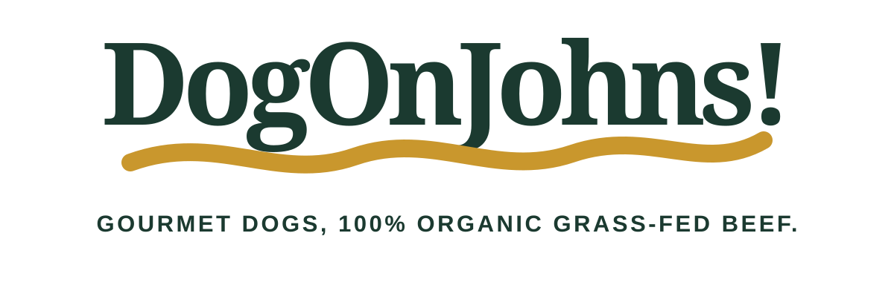
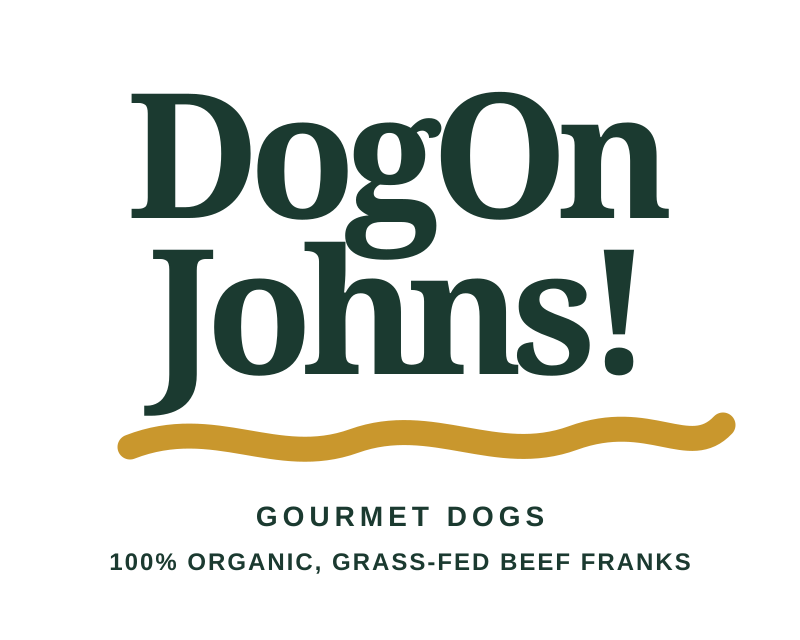
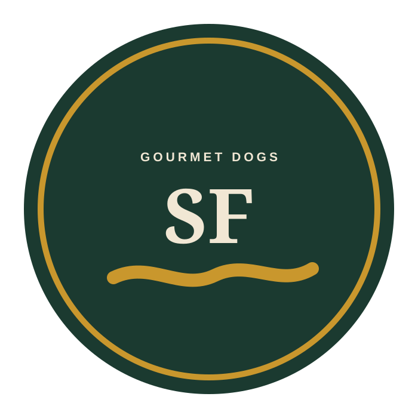

Primary wordmark.
The full name, mustard sweep and product proof. “Gourmet dogs” names the category; “100% organic, grass-fed beef franks” substantiates it.
The mustard sweep is the constant. The proportions change only to fit the surface.

The full name, mustard sweep and product proof. “Gourmet dogs” names the category; “100% organic, grass-fed beef franks” substantiates it.

Same type, gesture and product proof, rebuilt for sleeves, social avatars and narrow signs.

A contained mark for catering materials, question cards, labels and pop-up applications. The quality claim remains part of the mark without overtaking the name.
Verde carries authority. Cream creates warmth. Mustard supplies appetite and motion.
The sweep may shorten, but its weight, curve and color stay recognizable.
The food gesture supports DogOnJohns. It never becomes a cartoon or separate mascot.